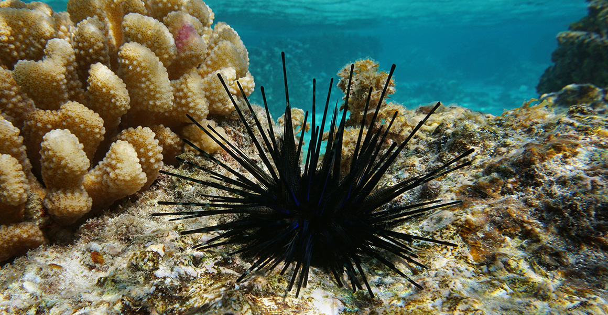

Urchin
Spiny marine animals that cling to rocks and reefs.
- Species: Echinoidea
- Diet: Herbivore
- Size: 1-4 inches across
- Weight: 1-5 ounces
- Life span: 20-30 years
- Habitat: Oceans, rocky reefs
- Found: Worldwide
- Can be pet: No
Trivia: Sea urchins move with hundreds of tiny tube feet on their undersides.